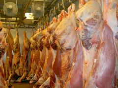
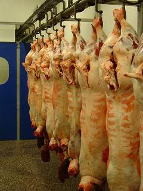
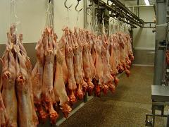

Assortiment
In het algemeen verwerkt slachterij Beernink de volgende dieren.
- Runderen
- Schapen
- Geiten
Hieronder lichten we in het kort de producten die van deze dieren komen uit.
Runderen
Hier ziet u een selectie van geslachte runder karkassen. Ook hebben wij van deze luxe runderen de technische delen gevacuumeerd in krimpzakken op voorraad.
{kind=link}
Enkele voorbeelden
Dit zijn enkele voorbeelden van standaard producten die wij in ons assortiment hebben. Onze producten kunnen op elke gewenste snit geleverd worden, zowel vers als vacuüm verpakt.
{kind=link}
{kind=link}
{kind=link}
Doordat ons bedrijf het slachten en de verwerking volgens strenge hygiënische eisen laat verlopen kunnen wij een houdbaarheid van 40 dagen na slachting garanderen.
Schapen
Schapen worden meestal als karkas of doormidden gehakt geëxporteerd of verkocht aan islamitische slagers. Ook kunnen ze op wens geheel uitgebeend worden.
{kind=link}
Ook hebben wij verschillende kwaliteitscategoriën. Waaronder luxe slager schapen en lammeren.
Geiten
Deze gemeste geitenlammeren hangen klaar voor export en worden hangend verpakt in stockinet getransporteerd.
{kind=link}
Verder worden geitenlammeren ook ingevroren in dozen verpakt en opgeslagen in afwachting van de grotere vraag in het hoogseizoen in het zuiden van Europa.
Deze geitenlammeren hebben een gemiddeld gewicht tussen de 5 en 7 kilogram.